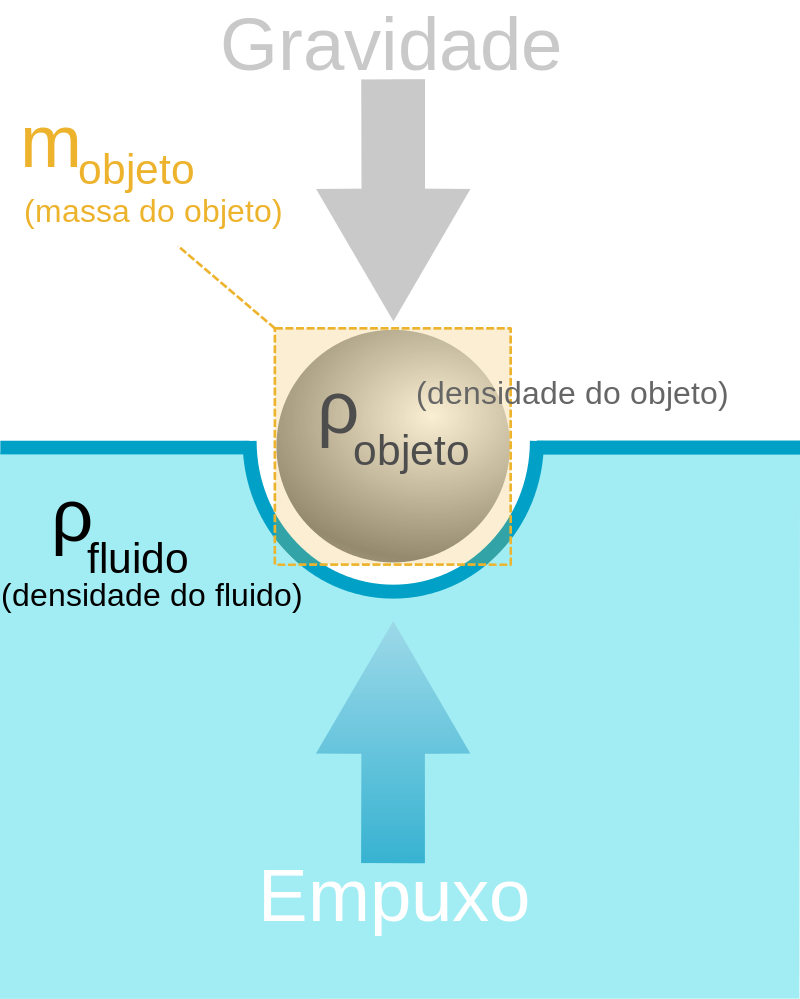

É o ramo da Física que estuda a força exercida por e sobre líquidos em repouso. Este nome faz referência ao primeiro fluido estudado, a água, é por isso que, por razões históricas, mantém-se esse nome. Fluido é uma substância que pode escoar facilmente, não tem forma própria e tem a capacidade de mudar de forma ao ser submetido à ação e pequenas forças. A palavra fluido pode designar tanto líquidos quanto gases.
Densidade (ou massa específica) de um corpo é a relação entre a massa e o volume do mesmo, ou seja:
$$d=m/v$$
A densidade informa se a substância do qual é feito um determinado corpo é mais ou menos compacta. Os corpos que possuem muita massa em pequeno volume, como é o caso do ouro e da platina, apresentam grande densidade. Já os corpos que possuem pequena massa em grande volume, como é o caso do isopor, apresentam pequena densidade. A unidade de densidade mais usada é $g\/{cm^3}$. Para a água temos que a sua densidade é igual a ${1g}\/{cm^3}$, ou seja, $1cm^3$ de água tem massa de $1g$. Apesar de esta unidade ser a mais usada, no SI (Sistema Internacional de Unidades) a unidade de densidade é $kg\/m^3$.
É a relação entre a força aplicada perpendicularmente sobre um corpo e a sua área sobre a qual ela atua. Matematicamente, temos:
$$P=F/A$$
A unidade de pressão no SI é o newton por metro quadrado $(N\/m^2)$, também chamado de pascal $(Pa)$, em homenagem a Blaise Pascal, físico francês que estudou o funcionamento da prensa hidráulica.
É a pressão que o ar da atmosfera exerce sobre a superfície do planeta. Essa pressão pode mudar de acordo com a variação de altitude, ou seja, quanto maior a altitude menor a pressão e, consequentemente, quanto menor a altitude maior a pressão exercida pelo ar na superfície terrestre.
Em 1643, o matemático e físico italiano Evangelista Torricelli conseguiu determinar a medida da pressão atmosférica ao nível do mar. Primeiramente ele encheu um tubo de aproximadamente um metro de comprimento com mercúrio, e logo em seguida mergulhou o tubo em um recipiente também com mercúrio, logo após ele notou que o mercúrio descia um pouco, se estabilizando aproximadamente a $76cm$ acima da superfície.
Torricelli interpretou essa experiência dizendo que o que mantinha a coluna de mercúrio nesta altura era a pressão atmosférica. A coluna de $76 cm$ só é obtida no nível do mar, pois quando a altitude varia a pressão atmosférica também varia como citado anteriormente. Com essa experiência defini-se que ao nível do mar $1 atm$ (uma atmosfera) é a pressão equivalente a exercida por uma coluna de $76cm$ de mercúrio, onde $g=9,8m\/s^2$, portanto:
$$1atm=76cmHg=760mmHg=1,01⋅10^5Pa$$
Para cada $10 metros$ de profundidade (em um ambiente aquático) a pressão aumenta o equivalente a $1 atm$.
Também chamado de Princípio de Stevin, diz que: "A diferença de pressão entre dois pontos do mesmo líquido é igual ao produto da massa específica (também chamada de densidade) pelo módulo da aceleração da gravidade local e pela diferença de profundidade entre os pontos considerados".
Simbolicamente podemos escrever:
$$p_B-p_A=d⋅g⋅h$$
Onde $d$ é a densidade do líquido, $g$ é o módulo da aceleração da gravidade local e $h$ é a diferença entre as profundidades dos pontos no mesmo líquido.
A partir do princípio de Stevin pode-se concluir que:
São recipientes geralmente em formato de U que são utilizados para estudos relativos à densidade e pressão exercidas por líquidos.
A lei de Stevin propõe que a pressão exercida por um líquido depende apenas da densidade do líquido, da aceleração da gravidade e da altura da coluna de líquido existente acima do ponto analisado:
$$p=p_{atm}+d⋅g⋅h$$
Por intermédio da lei de Stevin, pode-se observar que a pressão exercida por um líquido não depende do formato ou do volume do recipiente no qual ele se encontra e que a pressão para pontos de mesma altura é a mesma.
Quando dois líquidos imiscíveis (não se misturam) são colocados em um recipiente em formato de U, pode-se aplicar a lei de Stevin para estabelecer uma relação entre as densidades e as alturas das colunas de líquido. As alturas das colunas de líquido são proporcionais às densidades dos fluidos.
Aplicando a lei de Stevin e sabendo que pontos de mesma altura possuem mesma pressão, teremos:
$$P_1=P_2$$ $$P_{atm}+d_1⋅g⋅h_1=P_{atm}+d_2⋅g⋅h_2$$ $$d_1⋅h_1=d_2⋅h_2$$
Conclui-se que o produto das densidades pela altura da coluna de líquido deve ser igual para cada um dos fluidos dentro do recipiente. A igualdade será mantida se o líquido de menor densidade possuir a maior altura e vice-versa.
O princípio de Pascal mostra que num líquido a pressão se transmite igualmente em todas as direções. De maneira formal: "o aumento da pressão exercida em um líquido em equilíbrio é transmitido integralmente a todos os pontos do líquido bem como às paredes do recipiente em que ele está contido". Logo:
$$p_{final}=p_{inicial}+Δp$$
Em líquidos incompressíveis, a distância $h$ que dois pontos $A$ e $B$ guardavam, inicialmente, continua constante, portanto:
$$Δp_A-Δp_B=d⋅g⋅h$$ $$Δp_A=Δp_B$$
Algumas das aplicações do princípio de Pascal são:
As prensas hidráulicas constituem-se de um tubo preenchido por um líquido confinado entre dois êmbolos de áreas diferentes. Quando aplicamos uma força $F↖{→}_1$ no êmbolo 1 de área $A_1$, surge uma pressão na região do líquido em contato com esse êmbolo. Como o incremento de pressão é transmitido integralmente a qualquer ponto do líquido, podemos dizer que ele também atua no êmbolo de área $A_2$ com uma força de intensidade $F↖{→}_2$ proporcional à área do êmbolo 2.
O acréscimo de pressão $(Δp)$ é dado a partir do princípio de Pascal. Portanto, temos:
$$Δp_1=Δp_2$$ $$Δp_1=F_1/A_1$$ $$Δp_2=F_2/A_2$$
Logo:
$$F_1/A_1=F_2/A_2$$
De acordo com essa relação, vemos que força e área são grandezas diretamente proporcionais. Dessa forma, dizemos que o êmbolo menor recebe uma força de menor intensidade, enquanto que o êmbolo de maior área recebe maior força. Em decorrência disto, inúmeros equipamentos foram construídos de forma a facilitar o trabalho humano, como a direção hidráulica de um automóvel, por exemplo.
Para o deslocamento do êmbolo podemos dizer que o decréscimo de volume no êmbolo 1 é igual ao acréscimo do volume no êmbolo 2. Sabendo que a variação do volume é dada em função da área e do deslocamento e que a variação de volume é igual, temos que:
$$ΔV_1=ΔV_2$$ $$ΔV=A⋅d$$ $$A_1⋅d_1=A_2⋅d_2$$
O princípio de Arquimedes diz que: "Todo corpo imerso em um fluido sofre ação de uma força (empuxo) verticalmente para cima, cuja intensidade é igual ao peso do fluido deslocado pelo corpo".
Sendo $v_f$ o volume do fluido deslocado, então a massa do fluido deslocado é:
$$m_f=d_f⋅v_f$$
Sabendo que o módulo do empuxo é igual ao módulo do peso:
$$E=P=m⋅g$$
Logo:
$$E=d_f⋅v_f⋅g$$
O fluido deslocado é o volume do fluido que caberia dentro da parte imersa (do objeto) no fluido, estando ele totalmente ou parcialmente imerso.
Arquimedes formulou o seu princípio para a água, mas ele funciona para qualquer fluido, até mesmo para o ar.
Quando um corpo mais denso que o líquido está totalmente imerso, percebemos que o seu peso é aparentemente menor do que no ar. Este peso aparente é a diferença entre o peso real e o empuxo.
$$p_{aparente}=p_{real}-E$$